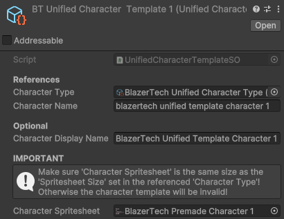

Create A Character Template
There are a multitude of ways to create characters in the Character Management System, however for this guide we're going to focus on Character Templates.
Think of a Character Template as a blueprint to create a character during runtime.
The Template defines the name of the character and the spritesheet(s) used.
Create Character Template Asset
To create a Character Template asset:
Right Clickthe Project window- Navigate to: Create > BlazerTech > Character Management System > Character Templates >
- Select either Layered or Unified Character Template
Unified Character Template Setup
A Unified Character Template requires:
- A reference to a Unified Character Type.
- A name for the character when it gets created.
- A reference to the spritesheet the character will use.

Spritesheet Requirements:
- Must be the exact same size as the Base Spritesheet assigned in the Character Type and contain the same animations.
- Sprite Mode:
Single- We won't be using the spritesheet directly. It'll be passed to the Character Shader. - Filter Mode:
Point (No Filter). - (Optional) Compression:
None- Generally not needed for pixel art.
Once finished, skip to Next Steps.
Layered Character Template Setup
Start by setting the basic required fields:
- A reference to a Layered Character Type.
- A Name for the character when it gets created.
- Optionally a Display Name that can be displayed along with the character.

Assign Layer Options
Once a Layered Character Type has been assigned, a list of Layers will appear. These are the same layers you assigned in your Layered Character Type.
Each entry in the list has an assigned Layer Option, that's the spritesheet that'll be used for that layer of the character.
Selecting an entry will open a dropdown containing all valid Layer Options that can be selected. This is the same list of Layer Options contained in each Character Layer Definition asset.

Tip
If the layers list ever appears incorrect or invalid, click Recreate List at the bottom to remake the list.
(Note: This will reset any selected options)
Once finished, Go to Next Steps.
Next Steps
Learn how to create and render characters from your Character Template during runtime.